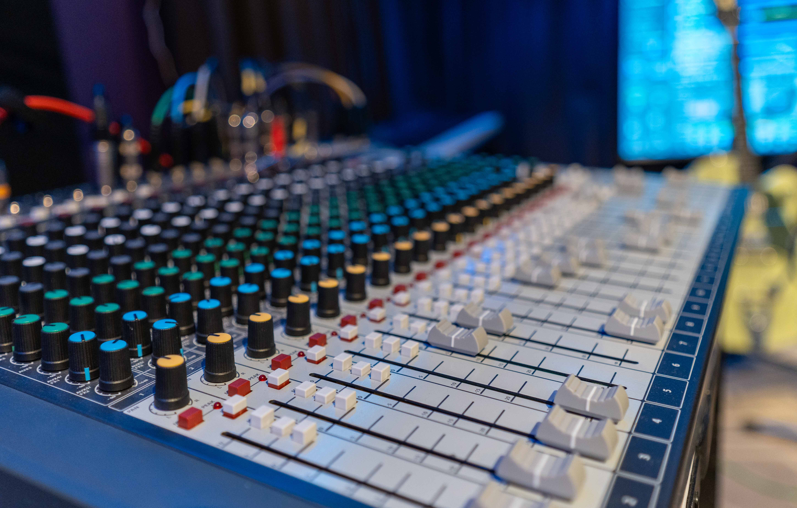
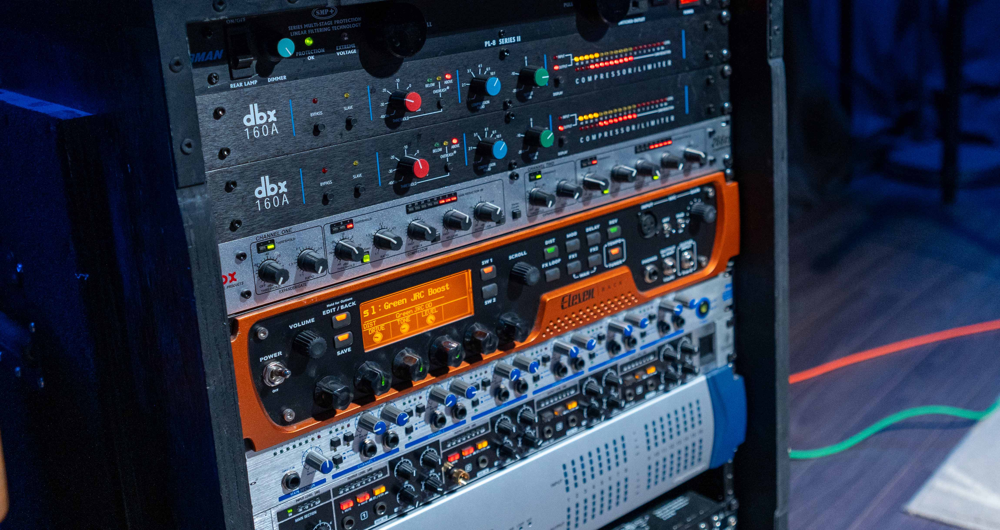

Whether it’s a wedding, a corporate event, or professional headshots, our photography services are designed to meet your needs. With a keen eye for detail, we ensure every photo tells a story.
WINS Womans Day Even 2024
Event photography
From narration for promotional videos to dubbing and ADR (Automated Dialogue Replacement), we deliver voiceovers that captivate your audience. Using professional-grade microphones and precise editing, we ensure every word resonates with clarity and emotion.

WINS
Portraits and headshots
We offer a complete podcast production package, providing everything you need for a professional result. From recording, whether in-studio or remote, with high-quality equipment to ensure exceptional sound, to meticulous editing that removes unwanted noise, adjusts levels, and adds intros and outros for a seamless listening experience, we’ve got you covered. We also include mastering to polish your podcast to meet professional audio standards, ensuring it’s ready for all streaming platforms.

WINS
Corporate and Real Estate photography
Great visuals deserve equally great sound, and we specialize in recording and mastering audio to complement your projects. Whether it’s talking head videos for YouTube, corporate presentations, or interviews, we ensure every word is clear and engaging. For live events or outdoor shoots, our on-location recording captures crisp sound using portable audio solutions. We also offer custom sound design, adding sound effects, ambient noise, and music to enhance the emotional impact of your video.